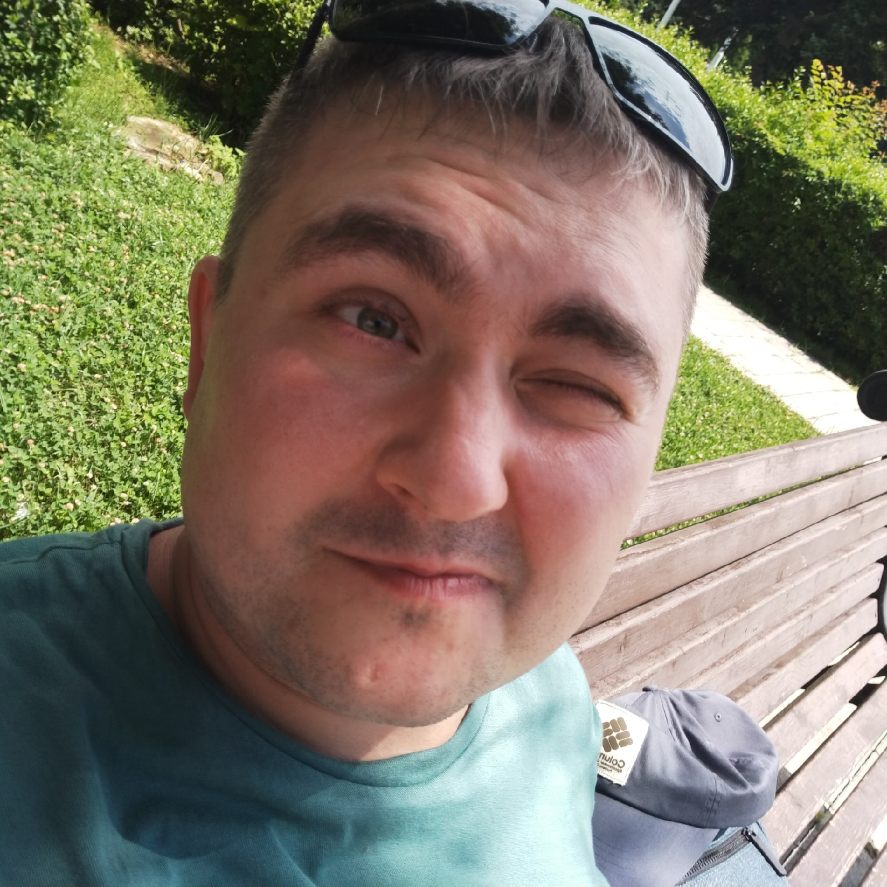
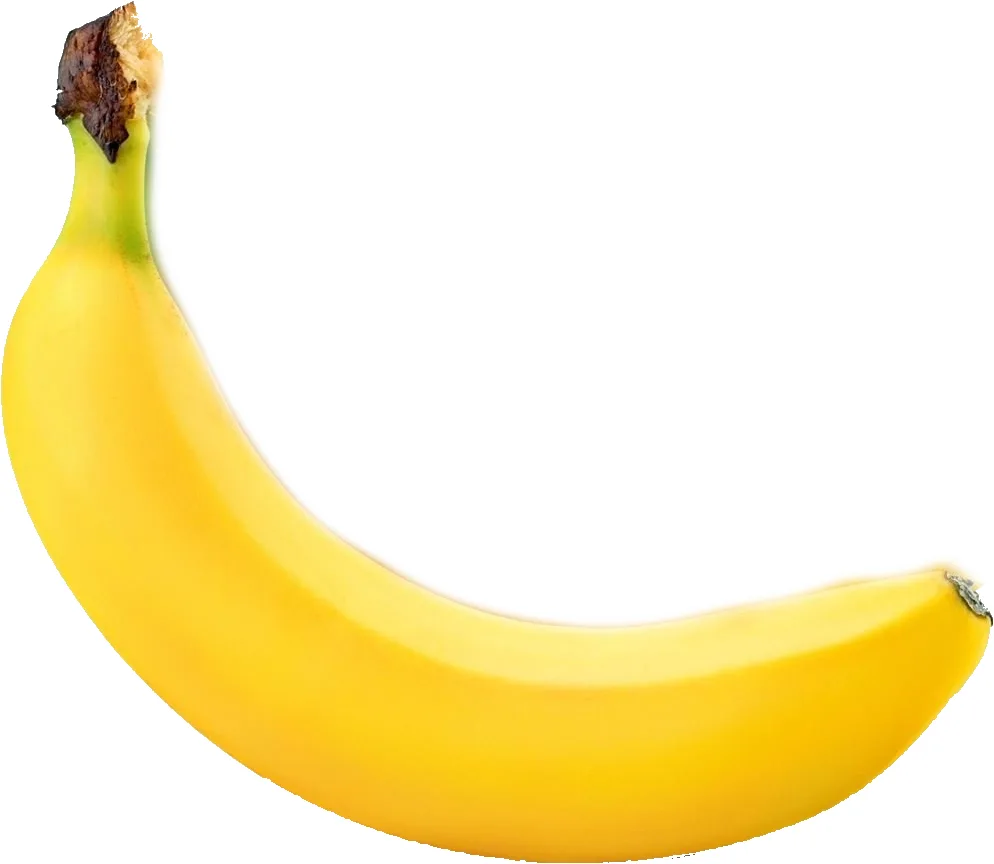

Я считаю, что наша команда уникальна. Все, кто принимает участие в проектировании щитов для частных домов и систем «Умного дома», сами живут в частных домах и пользуются этими системами ежедневно.
Практически у всей команды реализован умный дом на объектах, где они живут постоянно. У нас в офисе работает умный дом, и мы взаимодействуем с ним каждый день. Именно поэтому мы, как никто другой, понимаем реальный опыт эксплуатации: что системы могут, что не могут, и чем их лучше не нагружать.
Не хочу никого обидеть, но теоретики в проектировании напоминают школьника, который начитался книжек о том, как знакомиться с девушками, и учит других, хотя сам этого никогда не делал. Именно так выглядят проектировщики, которые берут схемы из интернета, никогда не держав в руках реальное оборудование.
Мы принципиально не работаем по чужим проектам. В большинстве случаев нам приносят не монтажные, а однолинейные схемы, по которым качественно собрать щит невозможно. При глубоком изучении чужих проектов мы всегда находим критические ошибки, которые делают эксплуатацию щита невозможной.
Мы не хотим нести ответственность за ошибки других. Правило «кто последний, тот и папа» здесь работает безотказно: если мы соберем щит по кривому проекту, виноваты в глазах заказчика будем мы. Поэтому мы предлагаем единственный честный вариант: мы делаем проект с нуля так, как считаем правильным, и несем полную ответственность за результат.
Идейный вдохновитель. Генерирую идеи со скоростью света. Люблю начинать разговор с фразы «Я всё придумал!», после чего команда бледнеет и думает, как это реализовать.
Вдыхаю жизнь в холодное железо. Обучаю дом чувствовать вас, а не просто мигать лампочками. Делаю так, чтобы Алиса понимала вас лучше, чем жена, и стала чем-то большим, чем просто голосовой помощник (ну, если вы понимаете, о чём я).
Профессиональный «доставатель» информации. Перевожу с языка «хочу чтобы было вау» на язык «нужно 50 реле и километр кабеля». Если вы не отвечаете, я найду вас даже в Нарнии, чтобы уточнить цвет рамок.

Единственный в команде, кто расчесывает провода чаще, чем себя. Превращаю ваши "хотелки" в суровые чертежи, а хаос в щите — в произведение искусства. Качаю бицепс, чтобы гнуть кабель 10 квадратов силой взгляда.
Человек с уровнем ОКР «Бог». Укладываю провода настолько идеально, что иногда щиты начинают мироточить. Считаю, что перекрещивание кабелей — это смертный грех, за который нужно бить линейкой по рукам.

Главная по «волшебным пенделям». Слежу, чтобы инженеры не ушли в астрал, а сборщики не уснули в бухте кабеля. Моя суперсила — жонглировать горящими дедлайнами и нервными клетками заказчиков, не роняя улыбки.
Десантник на объекте. Единственный человек, который знает, куда строители замуровали «тот самый провод». Монтирую щиты так надежно, что они переживут апокалипсис, и так аккуратно, что соседи будут завидовать.
Директор по стресс-менеджменту и контролю качества коробок. Отвечает за принудительную релаксацию сотрудников путем укладывания на клавиатуру. Иногда кусает провода, но только ради тестов на прочность изоляции.
Директор по стресс-менеджменту и контролю качества коробок. Отвечает за принудительную релаксацию сотрудников путем укладывания на клавиатуру. Иногда кусает провода, но только ради тестов на прочность изоляции.